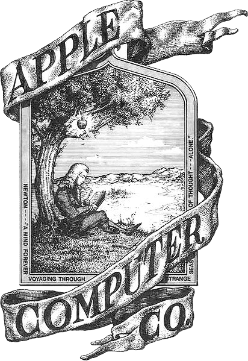
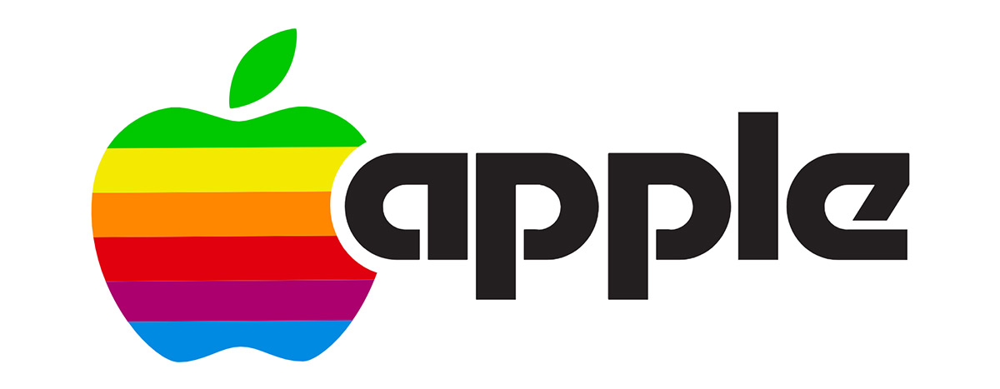

Historia do Logo da Apple
A maçã mordida da Apple está presente em todos os seus produtos, do iPhone ao MacBook. Conheça o significado da logo da marca e relembre as mudanças do desenho ao longo dos anos. Afinal, como uma fruta virou um sinônimo de uma das maiores empresas da história da tecnologia?
A primeira vercao
O primeiríssimo logotipo da história da Apple estava longe de transmitir a mesma simplicidade e objetividade do atual. Criado no mesmo ano de fundação da companhia, em 1976 por Ronald Wayne, o terceiro e não tão conhecido cofundador da empresa que vendeu sua parte na empresa por cerca de US$ 800 (cerca de R$ 3,8 mil, em conversão direta) pouco tempo depois, o emblema contava com a figura de Isaac Newton no folclórico momento da descoberta da gravidade, quando uma maçã supostamente teria caído sobre sua cabeça enquanto lia um livro debaixo de uma macieira.
Novo Logotipo da Apple
No entanto, o desenho de Wayne foi substituído logo depois por ser considerado muito complexo e ultrapassado. Além disso, acredita-se que Jobs também tinha preocupação com a impressão do logotipo em escalas menores. A tarefa de criar um logotipo mais moderno e objetivo para a Apple caiu então nas mãos do designer gráfico Rob Janoff, contratado por Jobs em 1977. Após se reunir pela primeira vez com o executivo no começo daquele ano, Janoff passou cerca de uma semana e meia estudando a forma de maçãs reais e desenhando vários rascunhos do que viria a se tornar o seu primeiro e único protótipo. Ele substituiu a imagem de Newton sentado sob a árvore por uma maçã com uma mordida que se fundia com a palavra "apple", em caixa baixa. A maçã também trazia um esquema de cores similar ao de um arco-íris, que teria sido um pedido de Jobs para "humanizar" a companhia.
Nascia, então, a primeira versão da boa e velha maçã mordida, que na época ainda contava com o clássico arco-íris em alusão ao vindouro Apple II — o primeiro computador pessoal do mundo com um display colorido. O logotipo foi prontamente aprovado por Jobs e adotado em todos os produtos, comerciais e documentos da empresa pelas próximas duas décadas.
Ao longo do tempo, a logo mudou pouco. Em 1984, a palavra "apple" foi removida, reduzindo a logo apenas ao desenho da maçã e, desde então, não houve mudanças significativas no design da marca.
A maçã mordida da Apple pode ser considerada um sucesso instantâneo. Rob Janoff conseguiu fazer, em 1977 — com apenas um protótipo —, aquilo que muitas empresas demoram anos para fazer e consolidar: um logotipo simples e indissociável da marca. As mínimas mudanças no formato do ícone garantiram sua atemporalidade e, com certeza, ajudaram a companhia a alcançar o posto de uma das marcas mais valiosas do mundo — sem falar da construção da imagem de marca jovem e inovadora geralmente atribuída à Apple.
Então é isso espero que tenha gostado do nosso artigo com essas curiosidades sobre uma das maiores marcas do Mundo a Apple
conteudo baseado nos sites MacMagazine e TecMundo Eletronicos